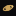
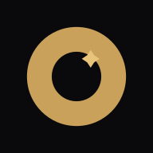
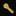
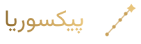
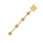
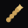

شش مفهوم با تم فضایی — روی پسزمینهٔ تیره · پیشنمایش محلی (static/brand/index.html)
سیارهٔ طلایی با حلقهٔ اریب و ماهِ روی حلقه — همان امbleم امروزی سایت.

حلقهٔ درخشان خورشیدگرفتگی با مهرهٔ الماسِ در مرکز.

هستهٔ درخشان با دو دمِّ نوری که در حرکت پشت سرش میآیند.

ستارههایی که با خطوط نازک به هم وصلاند — مسیرِ صعود به سوی ستارهٔ بزرگ.




موشکِ صعودکننده با بالهها، پنجرهٔ گرد و شعلهٔ طلایی.
ماهِ نو با ستارهٔ همراه — برشی از یک دایره با قانون fill-rule.
نسخهٔ تکرنگِ جوهر (logo-mono-dark) + فاوآیکونها
سیارهٔ طلایی با حلقهٔ اریب و ماهِ روی حلقه — همان امbleم امروزی سایت.
حلقهٔ درخشان خورشیدگرفتگی با مهرهٔ الماسِ در مرکز.
هستهٔ درخشان با دو دمِّ نوری که در حرکت پشت سرش میآیند.
ستارههایی که با خطوط نازک به هم وصلاند — مسیرِ صعود به سوی ستارهٔ بزرگ.
موشکِ صعودکننده با بالهها، پنجرهٔ گرد و شعلهٔ طلایی.
ماهِ نو با ستارهٔ همراه — برشی از یک دایره با قانون fill-rule.